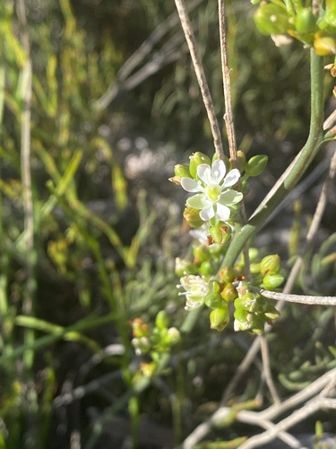

Macarthuriaceae
(No widely accepted common name)
Macarthuriaceae is a small, monogeneric family of flowering plants containing only the genus Macarthuria, with about 10-12 species. These plants are endemic to Australia, primarily found in Western Australia. They are typically small herbs or subshrubs, often with wiry stems and reduced leaves, adapted to sandy soils in arid or semi-arid environments. The family belongs to the order Caryophyllales.
Overview
The Macarthuriaceae family, consisting solely of the genus Macarthuria, is endemic to Australia, with most species concentrated in the southwestern part of Western Australia. These plants are typically inconspicuous annual or perennial herbs or subshrubs adapted to sandy soils in heathlands, open woodlands, and other dry habitats. Many species have a wiry, rush-like appearance due to their slender green stems and highly reduced or quickly falling leaves, suggesting that the stems may play a significant role in photosynthesis.
Historically, Macarthuria was often placed within the family Molluginaceae (carpetweed family). However, molecular phylogenetic studies revealed it represents a distinct lineage within the Caryophyllales order, leading to the establishment of the separate family Macarthuriaceae. Its closest relative appears to be another small family, Microteaceae. The flowers are small and lack petals, a key characteristic for identification.
Quick Facts
- Scientific Name: Macarthuriaceae
- Common Name: None widely used
- Number of Genera: 1 (Macarthuria)
- Number of Species: Approximately 10-12
- Distribution: Endemic to Australia (primarily Western Australia).
- Habit: Herbs or subshrubs, often wiry, reduced leaves; sandy/arid habitats.
- Evolutionary Group: Core Eudicots - Caryophyllales
Key Characteristics
Growth Form and Habit
Annual or perennial herbs or subshrubs. Stems are often slender, wiry, green, and much-branched, sometimes appearing rush-like or nearly leafless.
Leaves
Leaves are usually alternate, small, and simple, typically linear or scale-like. In many species, leaves are reduced or fall off early (caducous), with photosynthesis potentially carried out by the green stems. Small, often scarious (dry, membranous) stipules are present.
Inflorescence
Flowers are arranged in terminal or axillary cymes, which are often condensed into dense, head-like or umbel-like clusters. Bracts are usually present within the inflorescence.
Flowers
Flowers are small, inconspicuous, actinomorphic (radially symmetrical), and bisexual.
- Perianth: Consists of a single whorl of 5 (rarely 4 or 6) sepal-like segments (tepals). These tepals are free or slightly fused only at the base, often greenish or whitish with membranous margins, and persist in fruit. Petals are consistently absent.
- Androecium: Stamens are typically 8 (ranging from 3 to 10), arranged in a single whorl, and alternate with the tepals or are positioned irregularly. Filaments are slender, free or slightly fused at the base.
- Gynoecium: The ovary is superior, composed of 3 fused carpels, forming a 3-locular ovary. Placentation is usually axile, with 1 or 2 ovules per locule. There are 3 styles, which are typically short and free or fused only at the base.
Fruits and Seeds
The fruit is a dry, loculicidal capsule, splitting open along the back of each of the 3 locules to release the seeds. The capsule is often enclosed within the persistent tepals. Seeds are small, sometimes possessing a small aril.
Field Identification
Identifying Macarthuriaceae relies on recognizing its habit, Australian distribution, and key floral features, especially the lack of petals:
Primary Identification Features
- Habit and Range: Small, often wiry or rush-like herbs/subshrubs found in Australia (primarily WA), typically on sandy soils.
- Reduced Leaves: Leaves are alternate, small, linear or scale-like, or seemingly absent (stems green and photosynthetic).
- Small Flowers in Clusters: Flowers are inconspicuous, arranged in cymes or dense heads/umbels.
- Petals Absent: Flowers possess only a single whorl of 5 small, sepal-like tepals.
- Stamens Usually 8: The number of stamens (typically 8) is often greater than the number of tepals (usually 5).
- Superior Ovary (3 Carpels): Ovary is positioned above the tepals and consists of 3 fused carpels.
- Capsule Fruit: Fruit is a small, 3-valved capsule, often retained within the persistent tepals.
Secondary Identification Features
- Small stipules present: Look for small, often dry/membranous stipules at the leaf base (if leaves are present).
- Tepals persistent: The sepal-like tepals remain around the developing capsule.
Seasonal Identification Tips
- Flowering/Fruiting Season: Typically occurs following seasonal rains, often in spring or early summer in Mediterranean climates of WA. Flowers and fruits are needed for definitive identification.
- Vegetative Season: The wiry, often near-leafless habit can be characteristic even when not flowering.
Common Confusion Points
Macarthuriaceae might be confused with other small-flowered herbs/subshrubs in Australian arid/sandy habitats, particularly within Caryophyllales:
- Molluginaceae (Carpetweed Family): Where Macarthuria was previously placed. Molluginaceae often have whorled leaves (though sometimes alternate), flowers may have petals or petaloid staminodes (though sometimes absent), stamen number varies, and ovary structure differs (e.g., carpel number).
- Amaranthaceae (Amaranth Family): Many herbs/subshrubs with small flowers, often apetalous, but typically have dry, scarious (papery) bracts and tepals, and fruit is usually a utricle or circumscissile capsule. Stamen number usually 5 or fewer.
- Caryophyllaceae (Carnation Family): Usually have opposite leaves and flowers typically possess both sepals and petals (though petals sometimes reduced/absent). Fruit a capsule opening by teeth or valves.
- Restionaceae (Restionaceae): Superficially similar rush-like habit, but Restionaceae are monocots with highly reduced, wind-pollinated flowers enclosed in chaffy bracts, and different vegetative anatomy (e.g., persistent leaf sheaths).
Field Guide Quick Reference
Look For:
- Small herb/subshrub (Australia)
- Wiry/rush-like stems
- Alternate, small/absent leaves
- Small flowers in clusters
- Petals absent
- 5 sepaloid tepals
- Usually 8 stamens
- Superior ovary (3 carpels)
- 3-valved capsule fruit
Key Variations:
- (Monogeneric family - variations between species)
- Degree of leaf reduction
- Density of inflorescence
- Stamen number (occasionally not 8)
Notable Examples
The family contains only the genus Macarthuria:

Macarthuria spp.
(Macarthuria)
The sole genus in the Macarthuriaceae family, comprising about 10-12 species endemic to Australia, mostly Western Australia. They are small, often wiry herbs or subshrubs adapted to sandy soils. Key features include reduced alternate leaves (or appearing leafless), small flowers lacking petals but with 5 sepaloid tepals and typically 8 stamens, a superior 3-carpellate ovary, and a 3-valved capsule fruit.

Macarthuria australis
(Common Macarthuria - example name)
A representative species exhibiting the typical characteristics of the genus: a perennial subshrub with slender, branching stems, reduced linear leaves (often absent on upper stems), and small whitish flowers clustered in cymes. Found in sandy habitats in Western Australia.
Phylogeny and Classification
Macarthuriaceae belongs to the order Caryophyllales, within the Core Eudicot clade. This places it in the same major order as families like Cactaceae, Amaranthaceae, Caryophyllaceae, and Lophiocarpaceae, but distinct from the Asterids (e.g., Loganiaceae) and Rosids (e.g., Lythraceae, Lophopyxidaceae) discussed previously.
The genus Macarthuria was traditionally included in the Molluginaceae family. However, molecular phylogenetic studies demonstrated that Molluginaceae in its old sense was polyphyletic (not a single natural group). Macarthuria was shown to form a distinct lineage, leading to the establishment of the family Macarthuriaceae. Its closest relative appears to be the small Neotropical family Microteaceae. These families represent relatively early-diverging lineages within the core Caryophyllales group.
Position in Plant Phylogeny
- Kingdom: Plantae
- Clade: Angiosperms (Flowering plants)
- Clade: Eudicots
- Clade: Core Eudicots
- Order: Caryophyllales
- Family: Macarthuriaceae
Evolutionary Significance
Macarthuriaceae, though small and geographically restricted, is significant for:
- Phylogenetic clarification: Its recognition helps resolve the complex relationships within the Caryophyllales, particularly regarding the breakup of the former Molluginaceae.
- Biogeography: Represents an endemic Australian lineage within a globally diverse order, providing insights into the evolution and dispersal of Caryophyllales in Australasia.
- Morphological adaptation: Shows adaptations to arid environments, including reduced leaves and potentially photosynthetic stems.
- Floral reduction: The consistent absence of petals is a notable feature in its floral evolution.